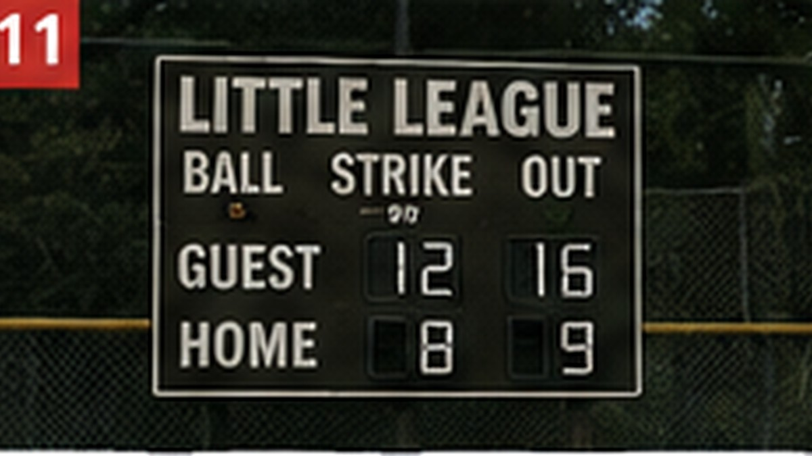

Animals
Dogs, cats and everyday animal behavior people love talking about.

Animals
8 Everyday Signs Your Dog Feels Safe With You
Dogs communicate trust through ordinary behavior—not dramatic tricks.
READ STORY →Animals
7 Things Cats Do That Look Weird but Are Usually Completely Normal
From midnight zoomies to squeezing into impossible boxes, cats have their reasons.
READ STORY →
Animals
Why Some Dogs Follow Their Person From Room to Room
Sometimes it is affection. Sometimes it is routine. And sometimes your dog simply does not want to miss anything.
READ STORY →